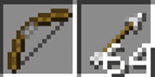

Modest Guides to Minecraft: Combat
Combat:
To survive in Minecraft, you need tools, weapons, and armor. Weapons allow you to defend yourself against the many mobs or other players that wish to do you harm. With weapons, you can fight back and destroy mobs for materials and other items they can drop.
Armor is a necessity as well. Without armor, you won’t survive long at all against all the baddies of the Minecraft world.
This article explains what weapons and armor are available in Minecraft, what they are made of and how they can be crafted. Knowing what your options are will give you a leg up as you attempt to survive.
Weapons:
There are several different ways you can damage your mobs or other players in Minecraft. The most common type of weapon is melee, but you can also use ranged weapons to keep your attackers at a distance. Potions and contraptions are also an option in later levels of gameplay.
Swords:
Swords are the main weapon in Minecraft. They are simple to craft and can be created out of a variety of materials. All the swords have an attack speed of 1.6 and recovery time of 0.625 seconds in between hits.
Types of Swords:
You can build a sword from a stick and two items of one of these types of materials: any wood planks, gold ingot, cobblestone, iron ingot, or diamond. Each of these has a different durability and amount of damage it can deal out.
Wooden:
For a wooden sword, you can use planks from any of the wood types in the game. You can get these by mining any tree and getting their wood. Then create 2 planks from the wood blocks. Here are the stats for the wooden sword.
- Attack Damage (2 points per heart): 4 points
- Damage per Second: 6.4
- Durability: 60
- Lifetime Damage (durability x attack damage): 240
Gold:
To get the materials for a golden sword, you will need to turn gold ore into ingots. Gold is a soft metal which has many purposes in Minecraft. The sword has the lowest durability of all the swords in the game and has the same damage as a wooden sword.
- Attack Damage (2 points per heart): 4 points
- Damage per Second: 6.4
- Durability: 33
- Lifetime Damage (durability x attack damage): 132
Stone:
Stone is the natural upgrade from wood in Minecraft. Stone is stronger than wood and gold and does more damage overall. You can use the cobblestone that you receive from mining stone. Smelting the cobblestone to turn it back into stone is not required.
- Attack Damage (2 points per heart): 5 points
- Damage per Second: 8
- Durability: 132
- Lifetime Damage (durability x attack damage): 660
Iron:
After stone comes Iron. An iron sword is arguably the most common sword used in Minecraft. Once you have been playing for a little while, Iron should be relatively easy to find on most maps. These are the stats for the iron sword.
- Attack Damage (2 points per heart): 6 points
- Damage per Second: 9.6
- Durability: 251
- Lifetime Damage (durability x attack damage): 1506
Iron:
Diamond is a rare item found in the depths of the world. It is the most durable of all the materials and makes the best sword in the game. Check out the stats here.
- Attack Damage (2 points per heart): 7 points
- Damage per Second: 11.2
- Durability: 1562
- Lifetime Damage (durability x attack damage): 10934
Crafting a Sword:
You will need a crafting table to create a sword to use. In the crafting table grid, you will need to put one of the material blocks in one of the spaces in the top row. Then, place one in the middle row right underneath the first one. Finally, put one stick below that one in the bottom row, so that you create a vertical line with the materials.
Axes:
Axes are used in Minecraft to mine trees and other wooden objects efficiently, however, they can also be used as weapons. Their durability and attack are based on the materials they are made from.
Shield Disabling:
Axes are also great weapons if you are going up against an enemy that is using a shield. They have a 25% chance to disable the use of a shield that is hit for 5 seconds. If the axe is enchanted with Efficiency, it gains 5% for every level it has of this enchantment. In addition, If the attacker is running at a sprint with the axe, they get a 75% chance to disable the shield.
Types of Axes
A player can make an axe out of the same materials that they can make a sword out of, but they need 3 of that material instead of two. See ‘Crafting an Axe’ below. The durability, damage, speed, and recovery time of an axe is based on what material it is made out of.
Wooden:
Just like a sword, it doesn’t matter what type of wood you use to craft an axe with. The wood does have to be made into planks to be used for crafting this item. A wooden axe is the weakest axe in the game, though it has more durability than a golden axe.
- Attack Damage (2 points per heart): 7 points
- Attack Speed: 0.8
- Damage per Second: 5.6
- Recovery Time: 1.25 seconds
- Durability: 60
- Lifetime Damage (durability x attack damage): 210
Golden:
The durability of a golden axe is weaker than the wooden axe, but the damage is the same. The golden axe is faster than the wooden axe which makes the attack speed and damage per second better. This axe requires 3 gold ingots to create.
- Attack Damage (2 points per heart): 7 points
- Attack Speed: 1
- Damage per Second: 7.0
- Recovery Time: 1.0 seconds
- Durability: 33
- Lifetime Damage (durability x attack damage): 119
Stone:
A stone axe is quite common for a tool. As a weapon, it is just as fast as the wooden axe, but it is more durable and does more damage per second. A player can use 3 cobblestone blocks to create this type of axe.
- Attack Damage (2 points per heart): 9 points
- Attack Speed: 0.8
- Damage per Second: 7.2
- Recovery Time: 1.25 seconds
- Durability: 132
- Lifetime Damage (durability x attack damage): 594
Iron:
Iron is the most common metal ore in Minecraft. While it does the same amount of damage as the stone axe, it is slightly faster and is almost twice as durable. You’ll need 3 iron ingots to create an axe of this material.
- Attack Damage (2 points per heart): 9 points
- Attack Speed: 0.9
- Damage per Second: 8.1
- Recovery Time: 1.11 seconds
- Durability: 251
- Lifetime Damage (durability x attack damage): 1134
Diamond:
As a rare, limited material in Minecraft, diamond may not be a player’s first choice for an axe. Diamond axes do the most damage per second out of all the axes. It is also incredibly durable. Three diamond is needed to create this one.
- Attack Damage (2 points per heart): 9 points
- Attack Speed: 1
- Damage per Second: 9.0
- Recovery Time: 1.0 seconds
- Durability: 1562
- Lifetime Damage (durability x attack damage): 7029
Crafting an Axe:
Crafting an axe requires a crafting table, 3 blocks of the material that you wish to make it out of, and 2 sticks. Place one material block in each of the first two top spaces on the crafting table. In the middle row, place the last material block in the leftmost space, then a stick in the very center. Place the second stick below the first stick. This will produce the desired axe.
Bow & Arrows:

Bows and arrows are required if you are wanting to attack at range. They can both be dropped by skeletons when killed, thought the bows are almost always damaged.
To attack with a bow, you will need arrows somewhere in your inventory. You can click the attack button briefly to shoot an uncharged arrow. This will cause 1 damage though the arrow will only travel about 3 blocks. Charging it part of the way will cause an arrow with 6 damage to go 15 blocks. A fully charging the shot will get an arrow to travel around 24 blocks and will cause 9 damage. Fully charging the bow can give you a chance to make a critical hit for a full 10 damage. A player can fully charge a bow by clicking and holding the attack button until the screen shakes slightly.
Crafting Bows:
If you don’t find a bow along your travels, they are easy to make. You will need 3 string, 3 sticks, and a crafting table. On the crafting table. Place the sticks down with one in the top middle, one in the center-left space, and one in the bottom middle. Next, place the string in a column along the right side of the crafting grid.
Alternatively, you can use two damaged bows to create a new bow. The new bow will have a durability that equals both damaged bows combined.
Crafting Arrows:
To craft arrows, you can use a crafting table and a stick, feather, and flint. The flint goes in the top row, the stick just below that, and the feather below the stick. Make sure they are aligned in the same column.
Other Types of Arrows
In the 1.9 Minecraft update, Mojang added 15 new arrows. One of these arrows was the spectral arrow. The rest were tipped arrows.
Spectral Arrows
The spectral arrow is a new arrow that, upon hitting a target, causes the ‘glowing’ effect for 10 seconds. ‘Glowing’ causes the target to have a glowing outline around it that can be seen by the player, even through solid blocks.
A player can use 4 glowstone dust and 1 arrow in a crafting table to create this arrow. Place the arrow in the center and put one glowstone dust in each adjacent space, creating a cross.
Tipped Arrows
There are 14 tipped arrows that were added to Minecraft recently.
To create a tipped arrow, a player needs 8 regular arrows and one lingering potion of the type needed. Place the lingering potion in the center of the 3-by-3 crafting table grid, and surround it by the 8 arrows. The lingering potion needed is determined by the type of arrow a player wishes to make. The tipped arrow goes by the same name as the matching lingering potion.
Here is a list of all 14 tipped arrows, and what they do:
- Regeneration – The target will regenerate up to 36 health points over the next 1 minute and 30 seconds.
- Swiftness – The target’s speed is increased by 20% for 3 minutes.
- Fire Resistance – Target is immune to Fire and heat-related damage for 3 minutes.
- Healing – Instantly restores 4 health points (2 hearts).
- Night Vision – Target can see at night as if it were day. This lasts for 3 minutes.
- Strength – For 3 minutes, the target’s damage dealt to enemies is increased by 3.
- Leaping – Target can jump higher and takes less fall damage for 3 minutes.
- Invisibility – Allows the target to become invisible. Players will not attract mobs unless wearing armor. This lasts for 3 minutes.
- Weakness – Melee damage of target is reduced by 4 points 1 minute and 30 seconds.
- Slowness – Mobs and other players are slowed down by 15% for 1 minute and 30 seconds.
- Poison – Causes up to 72 points of damage over 21.6 seconds, but will not decrease health below 1 point (half a heart).
- Harming – Does 6 damage instantly.
- Water Breathing – Allows you to breathe underwater and not drown for 3 minutes.
- Luck – Luck attribute increases by 1 for 5 minutes.
- Decay – Damages one point every second for 40 seconds.
Dispensers as Weapons
A player can also set up a dispenser with a trip wire or a redstone mechanism as a trap for unwanted guests. Arrows placed in the dispensers will do 3 damage to anything in the way.
Armor:
Armor is essential for every player. Once a player acquires armor, they can journey further or deeper and take on a lot of the mobs in the world. Each player has 4 armor slots where they can wear armor that will protect them from most damage – though not falling damage. They also have an off-hand spot where items can be placed. This is where you can add a shield.
Types of Armor:
| Leather | Gold | Chain | Iron | Diamond | |
|---|---|---|---|---|---|
| Helmet | 1 | 2 | 2 | 2 | 3 |
| Chestplate | 3 | 5 | 5 | 6 | 8 |
| Leggings | 2 | 3 | 4 | 5 | 6 |
| Boots | 1 | 1 | 1 | 2 | 3 |
| Full Set | 7 | 11 | 12 | 15 | 20 |
There are 4 types of materials you can make armor out of in Minecraft: Leather, Gold, Iron, and Diamond. Chain armor is also available in the game, but cannot be crafted in survival. It can be found in the creative inventory in Creative Mode or by finding it in chests throughout the world.
Leather is the weakest armor, followed by Gold, then Chain and Iron. Diamond is the toughest armor available in Minecraft.
It takes 24 pieces of the material needed to craft a full set of armor. Leather armor requires leather, which you can get by killing cows. Gold armor is created by gold ingots. Iron armor is created by iron ingots. Finally, Diamond uses 24 diamonds.
Helmets:
You can craft a helmet by placing 5 pieces of the desired material in an upside-down ‘u’ in a crafting table. Once created, you can place the helmet in the head slot to the left of your character image in the inventory window.
Leather is the weakest armor, followed by Gold, then Chain and Iron. Diamond is the toughest armor available in Minecraft.
Here is the amount of durability each piece has by material:
- Leather: 56
- Gold: 78
- Chain/Iron: 166
- Diamond: 364
Chestplate:
To make a chestplate, you need 8 pieces of the material you want to use. Place one piece in each block on the crafting table’s grid except for the top middle space. That one remains empty. Chestplates offer the most protection out of all the pieces of armor, so you should go for this first when making armor, especially if you are struggling to find enough of the right material at first.
Based on the material it is made out of, here is the durability of each type of chest piece:
- Leather: 81
- Gold: 113
- Chain/Iron: 241
- Diamond: 529
Leggings:
Making leggings is like making helmets. You will need 7 pieces instead of 5, though. Create an upside-down ‘u’ on the crafting table grid, leaving the middle spaces in the center and bottom rows free, as if drawing pants on the grid.
This is the list of durability for each type of leggings a player can make in Minecraft.
- Leather: 76
- Gold: 106
- Chain/Iron: 226
- Diamond: 496
Boots:
Boots only take 4 pieces of your chosen material. They also give you the least protection out of all the pieces, so you can save these for last if needed. Using a crafting table, you can make boots by placing two pieces of your material on the left side, one on top of the other, and then two pieces on the right side, level with the first two.
The durability of the boots you make is determined by the material you use. Here is a list to show you how durable each one is:
- Leather: 66
- Gold: 92
- Chain/Iron: 196
- Diamond: 430
Shields:
Shields are placed in your off-hand slot, which is on the right-hand side of your character avatar in the inventory screen. A shield can be used by clicking the action button when you have an item without a ‘use’ action selected in your hotbar. Items without a ‘use’ action include swords, axes, pickaxes, etc.
Crafting a Shield:
Crafting a shield takes 6 planks of any wood – and it doesn’t have to be the same wood – along with 1 iron ingot. On the crafting table place the iron ingot in the top center space, then surround it with the wooden planks in a ‘u’ shape. Then place the last wooden plank in the bottom row in the center.